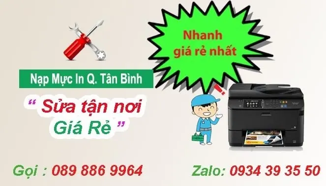
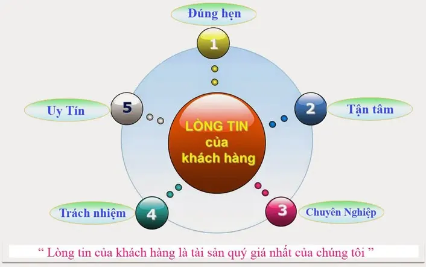
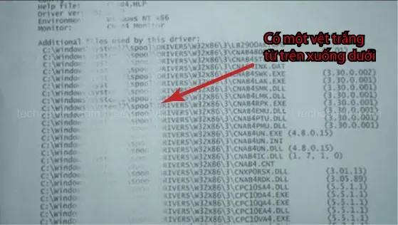
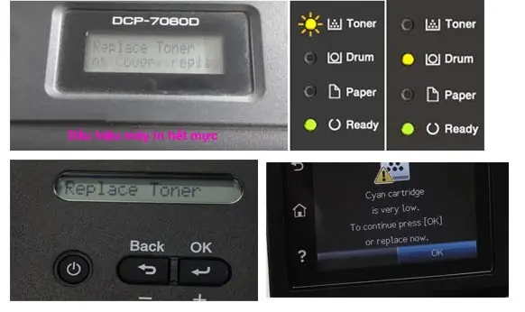

Nạp Mực In Quận Tân Bình | Tận Nơi - 24/7
Nạp mực máy in Quận Tân Bình là đơn vị chuyên bơm mực máy in nhanh - giá rẻ, công ty bơm mực in, sửa máy in tại nhà uy tín tại 1/19 Hồng Lạc, Phường 10, quận tân bình. Quý khách hàng cần nạp mực máy in nhanh tại quận tân bình liên hệ: tel : 089 886 9964 hoặc nhắn tin bơm mực qua zalo: 0934 393 550. Kỹ thuật viên sẻ đến ngay chỉ 20 phút
NẠP MỰC MÁY IN QUẬN TÂN BÌNH NHANH NHẤT
Tel : 089 886 9964 - Zalo : 0934 39 35 50
Tới nhanh nhất - chỉ 20 Phút
" Bơm Mực Máy In Tận Nơi - Tại Nhà Khách Hàng Ở Quận Tân Bình "

Nạp mực máy in quận tân bình UY TÍN - NHANH NHẤT
- Nạp mực máy in giá rẻ nhất tại quận tân bình.
- Đổ mực máy in phun màu liên tục tại nhà hp - canon - brother
- Thay mực máy in tại quận tân bình : Laser màu Hp - Canon - Brother
- Dịch vụ sửa máy in tận nơi quận tân bình nhanh nhất
- Ngoài ra Hitech còn sửa máy tính, hệ thống mạng và tổng đài điện thoại nhanh.
- Sửa chữa máy in giá rẻ như: không in được, kẹt giấy, không load giấy, rách bao lụa....
Công ty bơm mực máy in quận tân bình ?
- Nạp mực máy in quận tân bình có mặt nhanh nhất chỉ 20 phút.
- Dịch vụ Thay mực máy in tại nhà quận tân bình.
- Hi-tech luôn làm việc thứ 7, chủ nhật và ngày nghĩ lễ - 24/7
- Nạp mực máy in giá rẻ - tiết kiệm chi phí cho khách hàng.
- Sửa máy in tận nơi quận tân bình nhanh và đảm bảo uy tín
- Hitech Luôn nhận trách trách nhiệm nếu có sự cố xẩy ra.
- Nạp mực máy in, sửa máy in, máy tính luôn đi kèm với chế độ bảo hành.
- Bản in luôn đẹp sau khi nạp mực và in test.
- Chỉ nhận thanh toán khi khách hàng hài lòng về chất lượng và dịch vụ
- Hướng dẫn, hỗ trợ sửa miễn phí qua điện thoại
- Với công ty, doanh nghiệp có thể thanh toán công nợ vào cuối tháng.
- Thay mực in tại quận tân bình uy tín nhất
Thay Ruy Băng Mực Máy In Kim Epson LQ 300 LQ 310

Nạp mực in tại quận tân bình mất bao lâu ?
Công ty tin học hi-tech tại quận tân bình: có địa chỉ tại 1/19 Hồng lạc, tân bình, chi nhánh tại 985/34 Âu cơ. với đội ngũ kỹ thuật viên đông đảo có mặt nhanh nhất chỉ 20 phút. Khoản thời gian bơm mực cho 1 hộp mực Hp - canon : chỉ mất khoản 5 phút. Với một số dòng samsung, brother mất khoản 10 phút cho một bình nạp và reset mực, reset chip mực nếu có
Giá bơm mực máy in tại quận tân bình : quý khách có thể xem chi tiết bảng giá phía dưới
Dấu hiệu cho thấy cần phải bơm mực máy in ?
Khi quý khác hàng cần bơm mực in tại quận tân bình nhưng không biết máy in đã hết mực hay chưa - có thể tham khảo một số nhận biết như sau
- đối với máy in HP - Canon : khi quý khách hàng cùng máy in canon - Hp thông thường có các triệu chứng hết mực như: in không ra chữ, in mất chữ, in mờ chữ hoặc có xọc trắng lớn từ trên xuống dưới ... giống với hình dưới

- Đối với một số dòng máy in panasonic - máy in samsung - máy in brother... những dòng máy in sử dụng chíp mực hoặc nhong reset có một số dấu hiệu nhận biết như: máy in báo hết mực in trên mày hình lcd, hoặc trên màn hình vi tính. Máy báo : replace tonel, tonel low, tonel end, Tonel empty ... và khi tháy máy in không ra chữ đều, có xọc trắng từ trên xuống dưới (giống ảnh trên), thì máy in cũng hết mực.

Chất Lượng nạp mực in quận tân bình ?
- Với đội ngũ kỹ thuật nhiều năm kinh nghiệm trong lĩnh vực máy in và máy tính, rãi đều tại các quận huyện Tp HCM như: quận 1, quận 3, quận 5, 6, 10, 11, quận Phú nhuận, quận tân bình, quận Tân phú ...
- chúng tôi luôn mong muốn đem đến công ty nạp mực máy in tận nơi tân bình nhanh & chất lượng nhất, cùng với chế độ hậu mãi và bảo hành Uy tín.
- Nắm bắt nhu cầu cần nạp mực máy in tại quận tân bình cho chất lượng đẹp của Quý công ty, doanh nghiệp cũng như những cá thể khác. HiTech computer luôn nhắc nhở mỗi KTV phải luôn lấy quy tắt " khách hàng là thượng đế " để phục vụ tốt nhất. có được niềm tin của quý khách hàng là sự thành công của chúng tôi
- Luôn có kỹ thuật túc trực tại quận Tp HCM, Khi quý khách gọi sẻ có kỹ thuật đến ngay trong vòng 20'
BẠN cần Thay mực máy in tại quận tân bình GẤP 24/7 - Tel :089 886 9964 - Zalo: 0934 393 550
-->> hãy cho chúng tôi biết " Loại máy in bạn đang dùng & địa chỉ". kỹ thuật viên sẻ đến ngay trong vòng 20'
Bảng Giá Bơm Mực In Quận Tân Bình
bơm mực máy in NHANH NHẤT quận Tân Bình
Một số câu hỏi về dịch vụ thay mực in quận tân bình
- Vì sao phải nạp lại mực máy in ?
- Để tiết kiệm chi phí in ấn cho doanh nghiệp , gia đình. Khi máy in hết mực tai cần nạp lại mực in với giá thành rẻ hơn mua hộp mực in mới rất nhiều. Không chỉ vậy chúng ta còn giảm đáng kể lượng lớn chất thải nhựa ra môi trường.
- Giá cho một lần bơm mực in tại quận tân bình là bao nhiêu ?
- Quý khách hàng có thể tham khảo giá mực in chi tiết ở phía dưới trang web, hoặc có thể tham khảo tại : " Bảng Giá Nạp Mực Máy In"
- Bơm mực in tại quận tân bình mất bao lâu ?
- Với công ty Mực in Hi-Tech tại quận tân bình. Kỹ thuật viên có mặt nhanh nhất chỉ 20 phút sau khi nhận được yêu cầu cần thay mực in tại nhà quận tân bình của quý khách hàng
- Nạp mực in tại quận tân bình có xuất hóa đơn đỏ không ?
- Công ty mực in Hi-Tech tại quận tân bình có xuất hóa đơn VAT đầy đủ theo yêu cầu của quý khách hàng. với điều kiện đơn hàng dịch vụ trên 200k, Với quý công ty nạp mực in tại quận tân bình dưới 200k có thể gom phiếu dịch vụ, lần sau kế toán xuất hóa đơn điện tử một lần
- Ở quận tân bình : công ty Hi-tech có làm công nợ cuối tháng với quý công ty - doanh nghiệp có nhu cầu.
- Liên hệ nạp mực in ở quận tân bình.
- Khi cần thay mực in tận nơi quận tân bình : quý khách hàng có thể gọi số hotline: 089 886 9964 - Hoặc nhắn tin Zalo cho chúng tôi : 0934 393550
Dịch vụ tin học Hi-Tech HCM gởi đến quý khách lời chào trân trọng nhất. Cảm ơn quý khách đã sử dụng dịch vụ nạp mực máy in tại nhà của công ty chúng tôi trong thời gian qua. Với độ ngũ kỹ thuật viên tay nghề cao, nhiều năm kinh nghiệm, chúng tôi luôn đặt tiêu chí: " Khách hàng là thượng đế" lên hàng đầu
Công ty chúng tôi chuyên: nạp mực máy in ở quận tân bình, bơm mực máy in tại nhà, sửa máy tính, máy in tại các Quận như: Quận 1, Quận 3, Quận 5, Quận 6, Quận 10, Quận 11, Quận Tân Bình, Quận Tân Phú, Quận Gò Vấp, Quận Bình Tân, Quận Phú Nhuận....
Với đội ngủ kỹ thuật viên tay nghề cao, nhiều năm kinh nghiệm trong lĩnh vực: nạp mực máy in tận nơi, sửa máy tính tại nhà, sửa máy in tận nơi Tp.HCM, đội ngũ kỹ thuật viên đông đảo, luôn túc trực tại các quận huyện Tp.HCM sẻ đem đến cho quý khách sự hài lòng và yên tâm nhấ t
Dịch Vụ Sửa Chữa, Bơm Mực Máy In Tận Nơi HCM
- Kiểm tra, sửa chữa, cài đặt phần mềm máy in, máy fax
- Nạp mực máy in laser trắng đen: Hp, Canon, Brother, Samsung...
- Nạp mực máy in laser màu : HP, Canon, Brother......
- Đổ mực máy in phun màu tận nơi: HP, Canon, Epson...
- Thay thế linh kiện máy in, mực in chính hãng, giá rẻ
- Đổ mực máy in chất lượng, kiểm tra sự cố máy in, máy fax...
- Dịch vụ vệ sinh mực in, máy in tận nơi Tp.HCM
- Dịch vụ bơm mực máy in giá rẻ, uy tín tại quận Tân bình
- Dịch vụ nạp mực máy in nhanh tại quận tân bình khi bạn cần gấp.
- Đổ mực máy in HP M402d/ M403/ M401
- Đổ mực máy in HP M102/ M104/ M130
- Thay Băng mực máy in Kim Epson LQ 300, 310, 2190 ..
Khi Quý khách hàng có nhu cầu đổ mực máy in tận nơi tân bình hay sửa máy tính, sửa máy in tại nhà quý khách hãy gọi cho chúng tôi - 0934 39 35 50. Với đội ngũ kỹ thuật viên nhiều năm kinh nghiệm sẻ đến nhanh nhất chỉ từ 20 đến 30 phút. Dịch vụ bơm mực máy in quận Tân bình luôn mang đến sự hài lòng và yên tâm cho Quý khách hàng
Cửa hàng bán hộp mực máy in quận tân bình
bơm mực máy in " SIÊU TỐC " quận tân bình : GIÁ 90.000
Thay Ruy Băng Mực Máy In Kim Epson LQ 300 LQ 310

Thay mực máy in quận tân bình uy tín - chất lượng
Ngoài nạp mực máy in tại quận tân bình, Hi-Tech còn sửa máy in tại nhà giá rẻ, sửa máy tính tận nơi, mua bán hộp mực máy in quận tân bình các loại Hp - canon - samsung - brother - ricoh ...
Tại quận tân bình công ty Tin Học Hi-Tech nhận bơm mực in tất cả các ngày trong tuần, Nạp mực máy in thứ 7, Bơm mực in cả ngày chủ nhật. Với những khách hàng cần nạp mực máy in buổi tối tại quận tân bình vui lòng liên hệ trước 6 giờ chiều. Kỹ thuật viên sẻ túc trực và đến đúng giờ
5. Các Dịch Vụ Liên Quan Đến Mực In Ở Quận Tân Bình :
- Nạp mực máy in canon tận nơi nhanh quận tân bình
- Bơm mực máy in A3, A4 giá rẻ ở quận tân bình
- Bơm mực máy in màu giá rẻ Hp, Canon, Brother ...quận tân bình
- Thay mực máy in Brother tận nơi quận tân bình
- Nạp mực máy in Samsung giá rẻ ở quận tân bình
- Đổ mực máy in Recoh tận nơi nhanh tại quận tân bình
- Đổ mực máy in Xeroc tại nhà quận tân bình
- Nạp mực máy in Lexmark ở quận 11 tại tp. hcm
- Cung cấp hộp mực máy in quận tân bình
- Bán hộp mực máy in giá rẻ quận tân bình
- thay mực tại quận tân bình máy in hp, canon
- Đổ mực máy in các loại Panasonic, xerox, recoh tại tp hcm
- Dịch vụ đổ mực máy in tại quận 5 giá rẻ
- Cần bơm mực máy in gấp tại quận tân bình
- cần nạp mực máy in gấp - liên hệ: 0934393550
- Shop nạp mực máy in quận tân bình giá rẻ
Ngoài đổ mực máy in giá rẻ tại nhà, còn có các dịch vụ như:
- Sửa máy tính tại nhà quận tân bình.
- Sửa máy tính tại quận tân bình
- Cài đặt windown và các phần mềm ứng dụng
Tags: mua hộp mực máy in quận tân bình, nạp mực in gần quận tân bình, nơi bơm mực máy in quận tân bình, công ty thay mực in giá rẻ tân bình, cửa hàng thay mực in tân binh. chi tiết:
http://www.tinhocht.com/home/nap-muc-may-in-quan-tan-binh
Công Ty Tin Học Hi-Tech
Tel: 089 886 9964 – Zalo: 0934 393 550
Email: tinhocnamphong99@gmail.com
web: https://tinhocnamphong.net/
Fanpage : https://www.facebook.com/bommucmayinnp
MST: 0315587367
Địa bàn nhận nạp mực máy in tại Quận Tân Bình
Từ cửa hàng ở 79 Bắc Hải (Quận 10) sang Quận Tân Bình khoảng 3,2 km, kỹ thuật chạy mất chừng 10 phút. Đây là quãng đường đi lại hằng ngày nên khách gọi buổi sáng thường được nhận trong buổi.
Kỹ thuật nhận việc trên khắp các tuyến Cộng Hoà, Trường Chinh, Hoàng Văn Thụ, Âu Cơ, Lý Thường Kiệt, Bàu Cát, Cách Mạng Tháng 8 và Phạm Văn Hai cùng những khu vực lân cận. Khách ở quanh Sân bay Tân Sơn Nhất, chợ Tân Bình, toà nhà E.town, chợ Phạm Văn Hai và khu Bàu Cát là nhóm gọi thường xuyên nhất, phần lớn là văn phòng, cửa hàng photo và hộ kinh doanh in hoá đơn mỗi ngày.
Nhà hoặc công ty nằm trong hẻm, trên tầng cao hay trong toà nhà văn phòng đều nhận bình thường, không tính thêm phí. Máy đặt ở đâu thì bơm mực ngay tại đó, không cần tháo máy mang đi.
Quy trình thay mực máy in cho văn phòng ở Tân Bình
Khách Tân Bình phần lớn là công ty quanh trục Cộng Hoà — Hoàng Văn Thụ và cụm văn phòng E.town, nơi một chiếc máy in phục vụ cả phòng. Máy đứng là công việc cả phòng khựng lại, nên quy trình được sắp để máy chỉ nghỉ đúng quãng thợ thao tác:
Bước báo giá nằm trước bước làm — nguyên tắc cố định. Kỹ thuật kiểm tra xong đọc rõ: bơm mực bao nhiêu, có linh kiện nào mòn cần thay không, tổng cộng hết bao nhiêu. Kế toán cần chứng từ thì có phiếu dịch vụ và hoá đơn VAT xuất theo thông tin công ty.
Công ty nên gọi thợ tới hay cử người mang máy đi?
Bài toán của doanh nghiệp không phải tiền mực mà là thời gian nhân sự. Cử một nhân viên tháo máy, chạy xe đi, ngồi chờ rồi quay về lắp lại — mất trọn buổi làm việc của người đó, chưa kể rủi ro rơi vỡ hộp mực dọc đường.
| Cử nhân viên mang máy đi | Thợ tới văn phòng | |
|---|---|---|
| Thời gian nhân viên bỏ ra | Nửa buổi tới cả buổi | Chỉ cần người mở cửa, ~30 phút |
| Máy ngưng hoạt động | Từ lúc tháo tới lúc lắp lại | Chỉ trong lúc thợ thao tác |
| Rủi ro vận chuyển | Rơi vỡ, đổ mực, lỏng cáp do tự tháo lắp | Không phải di chuyển máy |
| Giấy tờ công ty | Tự giữ hoá đơn mang về | Phiếu dịch vụ + hoá đơn VAT tại chỗ, công nợ cuối tháng |
| Nhiều máy một lúc | Mỗi chuyến một máy | Thợ làm lần lượt cả cụm máy trong một lần tới |
Văn phòng dùng máy in liên tục nên ghép lịch thay mực máy in định kỳ: thợ qua theo chu kỳ đếm trang thực tế của từng máy, thay trước khi mực cạn hẳn, không còn cảnh sáng thứ hai cả phòng đứng chờ. Máy nào trong cụm trở chứng — kéo giấy đôi, in lệch lề, mờ nửa trang — thợ sửa máy in luôn trong cùng chuyến, khỏi phát sinh cuộc hẹn mới.
Văn phòng có cả máy in màu thì xem thêm trang nạp mực máy in màu tại nhà — mực màu tính giá riêng theo bộ bốn màu.
Giá nạp mực máy in bao nhiêu tiền?
Bảng giá áp dụng tại TP.HCM, đã gồm công đến tận nơi — không phụ thu phí đi lại:
| Loại máy in | Giá nạp mực |
|---|---|
| HPLaser trắng đen | 90.000VNĐ / lần nạp |
| HPLaser màu | 300.000VNĐ / lần nạp |
| CanonLaser trắng đen | 90.000VNĐ / lần nạp |
| CanonLaser màu | 300.000VNĐ / lần nạp |
| BrotherLaser trắng đen | 140.000VNĐ / lần nạp |
| SamsungLaser trắng đen | 120.000VNĐ / lần nạp |
| PanasonicLaser trắng đen (máy in – fax) | 150.000VNĐ / lần nạp |
| XeroxLaser trắng đen | 120.000VNĐ / lần nạp |
| Epson · Canon · HP · BrotherMáy in phun màu | 90.000VNĐ / lần nạp |
- Giá trên đã bao gồm công nạp mực tận nơi trong nội thành TP.HCM — không phụ thu phí đi lại.
- Bảo hành đến hết mực nếu bản in bị lỗi sau khi nạp.
Câu hỏi thường gặp khi nạp mực máy in Quận Tân Bình
Bảo hành sau khi nạp mực thế nào?
Bảo hành đến khi hết hộp mực. Trong thời gian đó bản in bị mờ, lem hay sọc thì gọi lại, kỹ thuật quay lại xử lý miễn phí.
Bao lâu thì có kỹ thuật tới Quận Tân Bình?
Trong giờ hành chính thường 20–30 phút kể từ lúc gọi, vì luôn có kỹ thuật trực sẵn ở khu vực Quận Tân Bình và Quận 3 và Quận 10. Giờ cao điểm hoặc trời mưa có thể lâu hơn khoảng 15 phút.
Nạp mực máy in ở Quận Tân Bình giá bao nhiêu?
Máy in laser trắng đen 90.000đ, laser màu 300.000đ, máy in phun 90.000đ — giá đã gồm công tới tận nơi trong Quận Tân Bình, không phụ thu phí đi lại. Máy cần thay thêm linh kiện thì báo giá trước khi làm.
Khu vực nào trong Quận Tân Bình được nhận nạp mực tận nơi?
Toàn bộ Quận Tân Bình, gồm các tuyến Cộng Hoà, Trường Chinh, Hoàng Văn Thụ, Âu Cơ và vùng quanh Sân bay Tân Sơn Nhất, chợ Tân Bình, toà nhà E.town. Nhà trong hẻm hay văn phòng trên tầng cao đều nhận, không tính thêm phí đi lại.
Nạp mực máy in ở khu vực gần Quận Tân Bình
Kỹ thuật phụ trách Quận Tân Bình cũng nhận việc ở các quận sát bên. Nhà hoặc công ty nằm ở ranh giới thì bấm vào khu vực gần mình nhất để xem giá và thời gian có mặt: